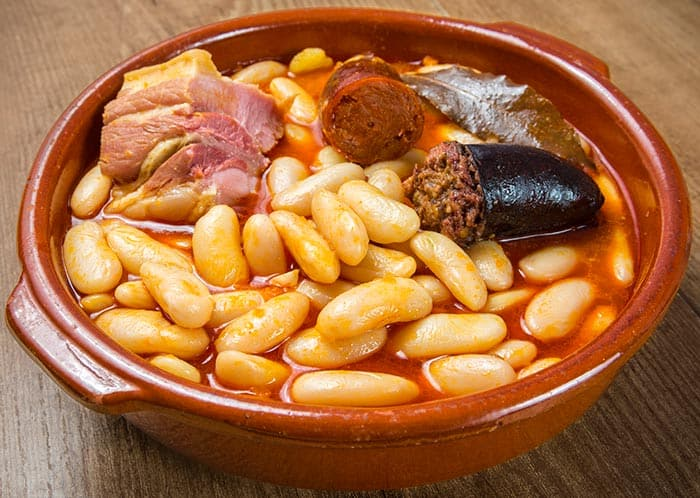

La mejor Fabada del mundo es asturiana

La conocida Fabada Asturiana contiene principalmente fabes, cuyo consumo se remonta en asturias al Siglo XVI
Se rumorea que proviene de la Cassoulet, un plato, hecho con fabes, de la cocina francesa, aunque todas las escrituras indican que la fabada estaba más rica
La primera referencia escrita a la fabada aparece en el diario asturiano de Gijón El Comercio en 1884 pero no menciona la receta.
Los emigrantes Asturianos dieron a conocer este maravilloso plato por el mundo, generanado variantes de este plato (obviamente menos ricas) como en la ciudad estadounidense de Tampa
Después de esta breve historia, conocerás los mejores ingredientes y la mejor manera de hacerla.
Vamos con todo!
ingredientes para 4 personas (para que esté tremendamente deliciosa)
- 500g de fabes de granja
- 1 trozo de lacón (como el jamón cocido pero más rico)
- 1 chorizo ahumado asturiano
- 1 morcilla asturiana
- 1 cebolla
- 1 cucharada de pimentón
- Hebras de azafrán
- Sal
- Hoja de laurel
- Aceite de oliva (virgen extra)
Preparación (como lo haría un auténtico asturiano)
- Añadimos las alubias en una cazuela, a ser posible baja y ancha (si es de barro mejor). Cubrimos con agua hasta que quede un par de dedos por encima de las mismas. Removemos otra vez para que se junte todo bien. Calentamos a fuego alto hasta que rompa a hervir.
- Cuando empiece a hervir introducimos la panceta, los chorizos, el hueso de jamón y las morcillas (previamente pinchadas para evitar que revienten).
- Procurad que las morcillas y los chorizos permanezcan siempre en la parte superior pare evitar posibles roturas que nos estropearían la fabada.
- Espumeamos durante unos minutos. Es decir, retiramos la espuma que normalmente contiene impurezas y a la vez desgrasamos un poco el caldo. Cuando lleve 1/2 hora cociendo a fuego alto le añadimos las hebras de azafrán diluidas en un poco de caldo caliente de la cazuela.
- Bajamos la temperatura de cocción. Añadimos sal al gusto, es importante probar el caldo ya que hemos echado el hueso de jamón y pueden quedar saladas.
- Dejamos que se cocinen lentamente a temperatura baja durante 2 horas. Siempre removiendo de vez en cuando con una cuchara de madera sin romperlas. Durante estas dos horas, añadimos agua fría en dos ocasiones para «asustarlas» (rompe el hervor y ayuda a su perfecta cocción).
- Probamos la fabada para ver si ya están tiernas y rectificamos de sal. Una vez probadas y tiernas apartamos del fuego y dejamos reposar una hora aproximadamente.
- A continuación retiramos los chorizos, la morcilla, la panceta y los huesos de jamón. Preparamos la carne, cortando los embutidos en rodajas generosas. Troceamos la panceta y aprovechamos la carne del hueso. Reservamos para la presentación.